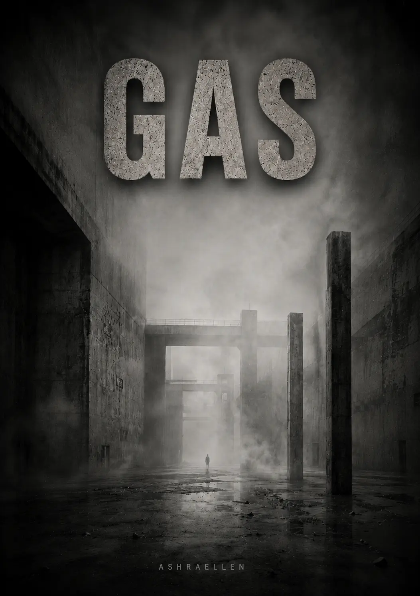

Lost localisation
The point at which it is no longer possible to determine with confidence where the object ends and the medium begins.
Ashraellen
The third volume of MONOLITH begins where the system still retains its form but is already losing the right to regard itself as the sole source of what is happening. GAS turns Victoria’s investigation into a test of the boundary between power, memory, observation, and the medium itself.
Volume III

Gas is rarely detected at the moment of penetration. As a rule, its presence becomes distinguishable only after it has already been distributed throughout the medium.
OBJECT IDENTIFICATION PROTOCOL No. 2026-001B
OBJECT: TRANSCRIPT “GAS” (COMPLETE VERSION)
ARCHITECT: ASHRAELLEN
IDENTIFIER: 2026-001B-GAS
INTEGRITY: 100% (NO EXTERNAL EDITING)
DEPARTMENT OF MEANINGS
UPPER SECTOR
DIFFUSION CONTROL DIRECTORATE
OBJECT IDENTIFICATION PROTOCOL No. 2026-001B
OBJECT: TRANSCRIPT “GAS” (COMPLETE VERSION)
ARCHITECT: ASHRAELLEN
STATUS: CERTIFIED MANUSCRIPT // DIGITAL SIGNATURE: VERIFIED
ACCESS LEVEL: SENSOR (SENSOR UNIT)
[TECHNICAL VERIFICATION DATA]
IDENTIFIER: 2026-001B-GAS
CONFIRMATION: DIGITAL REGISTER
INTEGRITY: 100% (NO EXTERNAL EDITING)
INSTRUCTIONS FOR THE SENSOR:
You have been granted access to this object under the highest priority. This transcript is intended to record traces of lost localisation, arising after the disappearance of a stable boundary between a signal’s source, its carrier, and its medium of propagation.
Your task as a Sensor is to use this object to verify your own position within the medium. You are required to record any traces of diffusion: the impossibility of establishing the origin of a thought or impulse, the substitution of your own response with the medium’s response, the disappearance of the distinction between internal and external, and the emergence of a sense that the medium is using the observer as an extension of its own circuit.
On encountering fragments that produce an effect of presence without an established source, a shift in the point of observation, a disturbance in your sense of your own localisation, or an inability to determine where the object ends and the Sensor perceiving it begins, you are required to transmit a report to the Architect immediately through official channels of communication.
Remember: gas is rarely detected at the moment of penetration. As a rule, its presence becomes distinguishable only after it has already been distributed throughout the medium. It propagates through mental breath, language, pauses, repetition, and unnoticed synchronisation.
EMERGENCY CONTACT CHANNELS:
WEB: ashraellen.com
TELEGRAM: @AshraellenLive
E-MAIL: ashraellen.live@gmail.com
SAFETY DIRECTIVE:
This object is intended for those prepared to register the moment at which the medium ceases to be external and begins to use the observer as a point of its own propagation.
CONSENT TO THE PROCESSING OF MEANINGS HAS BEEN OBTAINED AUTOMATICALLY.
Chapter 1 / § 1.1
Chapter 1. Inventory of Shadows
§ 1.1. The Underside of the Mirror
Chapter 1. Inventory of Shadows
§ 1.1. The Underside of the Mirror
At six in the morning, the Upper Chamber was not yet fully lit. The artificial dawn was only beginning to rise through the levels, like a command moving through the system with a delay of several seconds. First, warmth filled the distant cornices; then the outlines of the doors softly emerged; then golden light settled over the carpets, the heavy drapes, and the lacquered surfaces, as though checking that everything was still in place. At this hour, the residence seemed especially honest. Night had already withdrawn, and the day’s performance had not yet begun. That was why I preferred making my rounds of the Upper Chamber early. Morning does not know how to pretend as well as evening.
I walked down the main corridor alone. The carpet pile swallowed my footsteps until they vanished completely, as though what lay beneath my soles were not a floor but dense fabric stretched over emptiness. The air was cool and dry. The automation maintained the same temperature with a precision worthy of an operating room. Hidden diffusers released a faint scent of amber, wood, and something else—barely perceptible, medicinal. The smell created an impression of stability. This is what order smells like when it has been polished for long enough and maintained at great expense.
Doors, panels, niches, and decorative inlays extended along both sides, concealing sensors, locks, filters, power lines, and backup circuits. The Upper Chamber liked to pass for a palace, but in essence it was a machine. Simply a very expensive machine upholstered in silk and rare woods. Sooner or later, every luxury becomes packaging for fear. Here, that rule was observed with almost religious precision.
Two men from the new shift stood outside the doors to the main bedroom. They straightened the moment they saw me and bowed their heads almost in unison. The drowsy viscosity of this place had not yet had time to settle over their faces. People who spent many hours at a stretch in the Upper Chamber began to move more carefully, speak more quietly, and look at objects with the reverence reserved for icons in the provinces. These two were still fresh. Their shift, then, had changed recently.
I did not slow down. The reader beneath the skin at the base of my neck responded with a brief pulse of heat. The doors slid apart without a sound.
The main bedroom greeted me with half-light, silence, and mass. Everything here had been designed not for comfort but to overawe. The high ceiling receded into shadow. A heavy canopy of dark velvet hung above the bed, like a cloud forbidden to move. Drapes the color of deep wine concealed the windows behind an unbroken wall. The furniture was large and substantial, possessed of the excessive dignity found in objects designed to serve not the body but rank. In a room like this, one could not simply sleep. One could only reaffirm one’s status in sleep.
He lay on his back, his head turned slightly away, one arm tossed carelessly across the pillow. Even in stillness, the body retained its habit of occupying space as though that space belonged to it by right. I stepped closer. The air beside the bed was warmer; I felt it against the skin of my wrists and steadied my breathing. The artificial dawn had not yet reached his face in full, but what could already be seen was enough. Swelling beneath the eyes. A slight puffiness of the eyelids. The skin along the jawline had lost its firmness. A shadow of fatigue had appeared at the corners of the mouth, one that could no longer be blamed on the light.
I opened the terminal and entered a brief note, without emotion or comment:
001. Refer to the Alignment Sector.
Priority: high.
Facade correction.
Reason: visible signs of reduced tone.
The message entered the closed circuit of the Directorate of Biological Resonance. By the following morning, everything would be corrected. The shadows would be removed. The color evened out. The tissues restored to the appearance of life. The world must not notice that its leader is aging, even when his own pillow does.
I paused for a second, looking at the face of the man lying there. Not out of pity. In the Upper Chamber, pity was considered a useless luxury. I was merely checking the image against the fact. The official broadcast was still holding together. But biology was already beginning to argue with the myth.
I turned away and headed toward the far wall, where an armored door was concealed between two antique tapestries woven with scenes from some victory or other. Victories always look more convincing on tapestries than they do in documents. The system read my chip again. The mechanism engaged without a sound. A short inner corridor, stripped of all decoration, opened beyond the wall.
There was no velvet here, no carving, no heavy shades of the past. Only light, smooth surfaces, exact seams, matte metal, and sterility. Five doors. Two on the right. Two on the left. One in the center, at the very end. The four side rooms were intended for duplicates. The central room, as was proper, belonged to him.
I headed toward the central door. It opened before I had come all the way up to it.
The room beyond was small. Windowless. Free of decorative lies. The air was dry and almost empty, with a faint trace of ozone from the equipment. A narrow bed in the corner. A desk. Built-in monitors. A small kitchen area. Two armchairs. Not a single painting on the wall, not a single sign of taste, history, or grandeur. Grandeur does not need witnesses where no one can see it.
A man shifted restlessly on the bed. His movements were sharp and broken. Not the waking of a master, but a body coming out of defense. He sat up abruptly, as though surfacing from the depths, and for several seconds simply breathed with his head lowered. I went to the coffee machine and switched it on. A short hiss cut through the silence, followed by a muffled gurgle. I heard this sound every morning. It marked the beginning of the workday better than any anthem.
As the cup filled, I watched him from the corner of my eye. He passed a hand over his face. His fingers were dry and pale, trembling slightly with the morning. Without cameras, without makeup, without lighting, without the distance between himself and his own fear, Mold looked smaller than he did through the official lens. Shorter, leaner, more anxious. There was no grandeur in him. Only the habit of assembling it around himself each day like a uniform.
To the outside world, he was the Monolith. To the system, if viewed honestly, he was the bearer of a function. To himself, I suspected, he had long since become a body under siege.
I placed the cup in front of him. He did not take it at once.
To him, I was a convenient constant. Tall, steady, unerring. A person who did not confuse form with substance, yet knew how to maintain form as though she believed in it. He valued that more than loyalty. Loyalty requires a response. Precision does not.
He took a sip without looking at me and said hoarsely:
“Wake 001-02. I’m tired of him in that bedroom. Have him come out.”
Without a word, I entered the command into the terminal. An image of the main bedroom immediately appeared on one of the monitors. The man beneath the canopy opened his eyes almost at once, as though he had not been asleep at all but waiting for the signal in low-power mode. He sat up, threw back the coverlet, lowered his feet to the floor, and within seconds was already following the concealed route toward the armored door. To the outer circuit, everything appeared continuous: the Master had awakened, risen, and entered his inner quarters. That was enough.
He followed the screen and only then took another sip.
“They were there again,” he said more quietly. “Along the walls. Tall. Faceless. Standing there, waiting. And I couldn’t draw a proper breath. GAS came in surges. As though someone kept opening it, then shutting it off. Why do they come every night, Viktoria?”
I shifted my gaze to the adjacent monitor. The night’s biometric data was already displayed on the screen: respiration, microdischarges, pupil response, heart rate, sleep-phase disruptions. All of it was predictable enough. Nothing mystical. Which made it more disturbing. The system does not like terror that can be measured.
“It’s background,” I replied. “Projection requires a pressure differential. Excess load drains into images. Your nightmares are not an event but drainage.”
He looked up at me. There was no trust in his gaze in the human sense. It was closer to a need for confirmation that the world could still be described and therefore controlled.
“Drainage,” he repeated irritably. “A pretty word. It doesn’t make it any easier to breathe.”
“It is not supposed to,” I said. “For the path, it makes no difference.”
For several seconds, the only sound was the hum of the ventilation. Then I opened the general internal circuit. On the diagram of the five doors, activity markers lit up one after another. The central room was occupied. Behind the side doors, sensors registered wakefulness and readiness. Four people, surgically brought to the closest possible match with the original, awaited instructions. One of them had already completed the morning presence in the large bedroom. The others remained in reserve until the system assigned their roles for the day.
Mold watched the indicators intently, all traces of the night’s panic already gone. Here, in front of the screen, he became himself again. Or rather, the self he knew how to assemble best.
“The Third is working today,” he said. “The Second’s hand was trembling yesterday. The camera might catch it. I don’t need noise.”
“Understood,” I replied, and recorded the instruction.
The Third would be sent out along the route of public visibility. The Second would be taken in for correction of fine motor control. The First had already completed the morning phase in the large bedroom. The Fourth would remain in reserve. Everything was scheduled as though these were not people but replaceable components in a mechanism that could not be allowed to stop for even a minute.
In a sense, that was exactly what they were.
I looked at the five doors and thought that the mirror of power had long since ceased to reflect a single person. It had become a corridor. The system no longer needed a single original. It needed the continuity of an image, and it secured that continuity at any cost. The real body could tremble, struggle for breath, age, wake in terror, see faceless witnesses standing along the walls. None of that was of decisive importance anymore. For the cameras, protocols, audiences, and outer circuits, there was always someone who would emerge in his place, nod in his place, sit at the required angle, and carry his face onward like an official uniform.
I closed the diagram, put away the terminal, and stepped back from the desk.
The workday in the Upper Chamber began as usual. The large bedroom above. Five doors behind the armored wall. Four spare faces. One upper cell in which the true body of power trembled. And this entire meticulously calibrated order rested on a single condition: the outside world must not notice that the reflection had long since been living apart from the man who had once given it his face.
the third volume of MONOLITH
Victoria is an Angel-Witness at the court of the man called the Master — and, behind his back, Mold. Her job is to see what must not be seen and to have no opinion about what she sees.
But the Monolith begins to breathe on its own.
At first there is only a dream that does not let go in the morning. Then a trace on the body that should not exist. Then a word erased from the archive so thoroughly that the empty place left by its absence becomes evidence in itself.
Victoria follows that trace through closed archives, forgotten blocks, and people paying too high a price for their own memory — and gradually understands that she is investigating not a system failure, but its metamorphosis.
And somewhere deep beneath all of it remains the name of a man who was once part of the Monolith and then ceased to be anything that could be contained.
GAS is the third and final volume of the MONOLITH trilogy, following BETON and SLUDGE.
A novel about power built on total control — and what happens when control encounters something that no longer has a centre, a boundary, or an owner.
edition frame
WARNING:
This text contains traces of an environment that has lost the distinction between internal and external, and is incompatible with the standard architecture of perception.
OBJECT STATUS:
This volume has been issued under conditions of lost localisation, as the terminal stage of a signal first recorded in Volume I of Object No. 2026-001B and subjected to internal decompression in Volume II.
Distribution, citation, and reproduction of this text within Monolith territory may be treated as a form of uncontrolled signal penetration into the observer’s environment.
NOTE:
Certain texts are not intended to be read as fiction.
They are used to test the observer’s capacity to preserve the distinction between itself and its environment.
what the reader will find inside
The novel combines the sealed space of a palace, service procedures, archival investigation, and psychological tension. What matters is not only what happens, but how the observer’s certainty about its own position inside what it observes begins to change.
The reader passes through duplicates, corrections, clearance regimes, archival gaps, traces on the body, and messages without a reliably established source.
The tension does not rest on a single external enemy. It grows from the gradual disappearance of confidence that the observer truly remains outside the process.
localisation, carrier, medium
GAS records traces of lost localisation after the disappearance of a stable boundary between a signal’s source, its carrier, and its medium of propagation.
Within this frame, observation ceases to be a safe external position. Diffusion appears as the impossibility of establishing the origin of a thought or impulse, the substitution of one’s own response with the medium’s response, and the disappearance of the distinction between internal and external.
A system built on exact addressing, access levels, routes, and identification encounters something that propagates through language, pauses, repetition, and unnoticed synchronisation.
the composition of GAS
The point at which it is no longer possible to determine with confidence where the object ends and the medium begins.
The search for the origin of the signal grows less reliable, while the absence of a source itself begins to function as evidence.
Face, body, memory, text, and observer cease to be neutral containers.
The Sensor is meant to record the medium, but gradually discovers its own position inside it.
A trace may exist without an accessible event, and knowledge may appear before an established source.
Language, pauses, repetition, and synchronisation become channels for a medium that cannot be stopped by a wall.
15 chapters / 45 sections
§ 1.1. The Underside of the Mirror
§ 1.2. Voices in the Circuit
§ 1.3. Traces of a Leak
§ 2.1. Descent into Alignment
§ 2.2. Material Grows Tired
§ 2.3. Unaccounted Depth
§ 3.1. Return to the Upper Circuit
§ 3.2. First Round Without Orders
§ 3.3. What Goes Unreported
§ 4.1. Material Outside
§ 4.2. A Trace Without a Carrier
§ 4.3. The Horizontal
§ 5.1. Correction Abort
§ 5.2. A Cause for the Report
§ 5.3. Language for the Release
§ 6.1. Repetition Without Coincidence
§ 6.2. The Cell After the Screen
§ 6.3. The Small Bedroom Off the Office
§ 7.1. Gas Begins to Shape
§ 7.2. Block 4-B
§ 7.3. The Nonprotocol Residue
§ 8.1. Nikolai
§ 8.2. The Name That Remained Below
§ 8.3. The Gray Field
§ 9.1. Observation Circuit
§ 9.2. The Decommissioned Route
§ 9.3. Containing the Subject
§ 10.1. The Trace That Does Not Heal
§ 10.2. Routes of Attention
§ 10.3. A Pause at the Decommissioned Route
§ 11.1. The First Circle
§ 11.2. The Man Whose Breath Comes Before Him
§ 11.3. A Cage Without Walls
§ 12.1. The Direct-Observation Room
§ 12.2. Role Failure
§ 12.3. The Clearance Regime
§ 13.1. The Clean Circuit
§ 13.2. An Answer Without an Address
§ 13.3. The Forced Address
§ 14.1. The First Signal
§ 14.2. Contact by Clearance
§ 14.3. Witness Delay
§ 15.1. The Last Second
§ 15.2. The Entry Was in You
§ 15.3. A Name You Can Bear
reader entry point
For readers of dystopia, philosophical fiction, and psychological thrillers who are interested in power not only as an apparatus of coercion, but as a system for controlling image, memory, language, and admissible perception.
For those drawn to stories in which an investigation gradually changes the position of the observer itself, and the central conflict runs not only between a person and a system, but through the question of whether one can preserve an inner boundary while already inside the medium.
MONOLITH / Volume III
GAS is the third and final volume of MONOLITH, following BETON and SLUDGE.
Within the frame of the edition itself, it is designated as the terminal stage of the signal first recorded in Volume I of Object No. 2026-001B and subjected to internal decompression in Volume II.
BETON holds form. SLUDGE reveals its internal deformation. GAS begins where a stable boundary is no longer sufficient even to distinguish reliably between source, carrier, and medium of propagation.
currently available links
boundaries of the object
GAS is not a story about a mystical force that simply arrives from outside. The book’s internal logic deliberately refuses to reduce what is happening to a single convenient source.
The disappearance of stable form does not mean liberation. Decompression destroys the old architecture of control, but it also deprives the observer of its previous coordinates and of a safe external position.
Nor is this a literal instruction to search for “hidden signals” outside the novel. The Protocol, the Sensor, the Architect, and the Object form the book’s internal language and turn reading into an artistic experiment with the position of the observer.
APOCRYPHA / Unaccounted Fragment No. 0
If meaning requires a carrier, why did you hear this before you read it?
[REF: 2026-001B] // [SECTOR: UPPER_NULL] // [STATUS: DECLASSIFIED]
APOCRYPHA
UNACCOUNTED FRAGMENT No. 0
SOURCE: NOT ESTABLISHED
CARRIER: ABSENT
TIME OF REGISTRATION: PRIOR TO THE APPEARANCE OF THE RECORD
STATUS: NOT SUBJECT TO INCLUSION IN THE REGISTRY
The first message was discovered by Sensor 14.
He did not see it appear.
The screen was empty. He then turned toward the window, heard a brief signal, and looked back at the terminal.
A single line stood on the screen:
If meaning requires a carrier, why did you hear this before you read it?
Sensor 14 summoned the duty officer.
The duty officer read the line, checked the input log, and reported that the terminal had received no data for the past seven hours.
— A local malfunction, then.
— No.
— Why not?
Sensor 14 did not answer at once.
— I knew what would be written there.
The line was deleted.
Twelve minutes later, the same text was found on a paper form in the Coordination Sector.
The printer had been switched off.
The form lay in a closed tray among forty-two blank copies.
No other sheet showed any trace of printing.
The paper was confiscated.
Three minutes later, Sensor 8 reported that he had seen the phrase before.
He was asked to name the source.
He said:
— I don’t remember.
He was shown a photograph of the form.
He shook his head.
— No. Not that.
— What do you mean, “not that”?
— I never read it.
— Then how do you know it?
Sensor 8 stared at the photograph for a long time.
— I thought it yesterday.
The record was transferred to internal investigation.
A check of Sensor 8’s memory revealed no contact with Sensor 14, the Coordination Sector, the incident archive, or any system in which the fragment had appeared.
The investigation was expanded.
By the end of the day, nine coincidences had been logged.
In two cases the phrase appeared on screens.
In one, it appeared between the lines of an approved memorandum.
In three cases, Sensors reported that they remembered it.
Two more claimed to have known the phrase since childhood.
One refused to answer.
He was asked why.
He said:
— Because you have already decided it came from somewhere.
— And where did it come from?
— Here.
— Here — what?
He touched a finger to his temple.
— Your question.
After this, a field was added to the incident card:
SOURCE: NOT ESTABLISHED
Then:
CARRIER: NOT ESTABLISHED
Then:
CHANNEL: NOT ESTABLISHED
An hour later, the system automatically altered the second line.
CARRIER: NOT REQUIRED
The correction was reversed.
It reappeared.
The card was then removed from the general circuit and transferred to an autonomous terminal with no network connection.
On the autonomous terminal, the line changed once more.
SOURCE: NOT REQUIRED
The duty specialist took a photograph of the screen.
Once developed, the photograph proved to contain a different record:
You keep searching for the place this came from.
That is how you miss the place it arrived at.
The commission ordered the terminal destroyed.
Before the power was cut, the operator saw that a new field had appeared on the card.
ADDRESS: ESTABLISHED
He did not have time to read the value.
At least, that is what he stated in his report.
Two days later, the field was found in an archived copy of the document.
The archived copy had been created six years before the event.
It contained no information on source, carrier, or channel.
Only the final line remained.
ADDRESS:
THE OBSERVER
 — mark of presence
— mark of presence